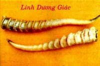

Sau 2 tháng uống thuốc, bệnh rối loạn tiền đình của tôi đã khỏi
hẳn
Sau 2 tháng uống thuốc, bệnh rối loạn tiền đình của tôi đã khỏi
hẳn
Tên khác:
Cửu Vĩ Dương Giác, Thô Giác, Thô Dương Giác (Bản Thảo Cương Mục), Hàm Giác (Sơn Hải Kinh), Ma Linh Dương, Nậu Giác, Ngoan Dương Giác, Bàng Linh Dương, Cửu Vĩ Dương (Hòa Hán Dược Khảo), Sừng Dê Rừng (Dược Liệu Việt Nam).
Tên khoa học: Cornu Antelopis. Họ Trâu Bò (Bovidae).
Linh dương giác

( Mô tả, hình ảnh, thu hái, chế biến, thành phần hoá học, tác dụng dược lý ....)
Mô Tả:
Dê rừng là tên gọi nhiều loài khác nhau: con Nguyên Linh (Gazella gutturosa), con Tạng Linh (Pantholops hodgsoni) con Ban Linh hoặcThanh Dương (Naemorhedus goral)v.v.. Sống thành từng bày ở miền rừng núi Việt Nam, có nhiều ở các núi đá vôi đảo Cát Bà (Hải Phòng). Linh dương giáchình chùy tròn, dài 20-40cm, hình cong, đặc biệt ngọn sừng vênh ra ngoài, đường kính phía bên dưới khoảng 4cm. Toàn sừng mầu trắng hoặc trắng ngà, trừ phần đầu. Có khoảng 10-20 đốt nổi cao thành vòng quấn chung quanh. Cầm vào tay có cảm giác dễ chịu. Sừng nontrông suốt qua có tia máu hoặc mầu đen tím, không có vết nứt. Sừng gìa có vết nứt dọc, không có đầu đen. Nửa sừng bên dưới ở trong có nút xương, gọi là ‘Linh dương tắc’, nút hình tròn, mặt ngoài có vết lồi ra đúng với rãnh ở mặt trong sừng. Mặt cắt ra trong chỗ giáp nhau có răng cưa không đều, rút cái nút ra thì nửa sừng bên dưới là cái ống, bên trong rỗng, có lỗ nhỏ, thông đến ngọn, gọi là ‘Thông thiên nhãn’. Đưa ra ánh sáng thì trong suốt, đó là đặc trưng chủ yếu của sừng. Chất cứng, không mùi, vị nhạt.
Thu hái, Sơ chế:
Thu hoạch quanh năm. Khi săn bắn được, cưa lấy sừng, để dành dùng.
Bộ phận dùng:

Sừng (Cornu Antelopis). Chọn thứ nào đen, xanh, sừng đen là tốt.
Loại non, trắng, bóng nhẵn, trong có tia máu không có vết nứt là tốt. Chất gìa, mầu trắng vàng, cod vết nứt là kém.
Bào chế:

Lấy Linh dương giác chẻ ra, ngâm trong nước, vớt ra, bỏ gân, bào mỏng, phơi khô là được (Dược Tài Học).
Dùng dũa hoặclà mài mòn để lấy bột tán ra thật nhuyễn thì uống khỏi hại dạ dày (Trung Quốc Dược Học Đại Tự Điển).
Mài lấy bột, hòa uống hoặccắt phiến sắc uống hoặcmài lấy nướccốt, hòa uống (Đông Dược Học Thiết Yếu).
Thành phần hóa học:

+Trong Linh dương giác có Calcium Phosphate, Kerratin (Trung Dược Học).
+Trong sừng dê rừng có Calci Phosphat, Keratin, Chất hữu cơ... (Dược Liệu Việt Nam).
Keratin (Nam Kinh Dược Học Viện(Trung Thảo Dược Học), q 1. Nam Kinh: Giang Tô Khoa Học Chi Thuật Xuất Bản 1980: 1475).
Lysine, Serine, Glutamic acid, Phenylalanine, Leucine, Aspartic acid, Tyrosine,(Từ Liên Anh, Trung Thành Dược 1988 (12): 32).
Lecithine, Cephalin, Sphingomyelin, Phosphatidylserine, Phosphaatidylinositol (Giang Bội Phân, Trung Dược Thông Báo 1982, 7 (6): 27).
Tác dụng dược lý
+Tác dụng lên hệ thần kinh trung ương: nướcsắc Linh dương giác ức chế hệ thần kinh trung ương, biểu hiện bằng hạ hoạt động của thần kinh hướng vận động ở chuột nhắt cũng như giảm thời gian tác dụng của Barbiturates. Thuốc cũng ức chế cảm giác đối với Strychnine và Caffeine. Hoạt chất này không gây gĩan cơ nhưng có 1 số đặc tính gây tê (Trung Dược Học).
+Tác dụng đối với điều hòa nhiệt độ: nướcsắc Linh dương giác làm hạ nhiệt độ đối với thỏ gây sốt bằng cách tiêm chế phẩm thương hàn hoặcphó thương hàn. Hiệu quả này bắt đầu trong vòng 2 giờ và kéo dài hơn 6 giờ (Trung Dược Học).
+Tác dụng chuyển hóa: nướcsắc Linh dương giác làm tăng sức đề kháng đối với việc oxy giảm ở súc vật (Trung Dược Học).
Giáng áp: Nước sắc Linh dương giác thí nghiệm trên động vật thấy có tác dụng giáng áp (Trần Trương Viên, Trung Thành Dược 1990, 12 (11): 27).
Độc tính:
Linh dương giác có độc tính thấp: cho chuột nhắt uống liều 2g/kg mỗi ngày, liên tục 7 ngày, thấy thể trọng tăng, ăn uống, hoạt động tự do, cho thấy có biến đổi ít (Brekhman I I và cộng sự. FarMaKOpp ToKcNKop, 1971, 34 (1): 36).
Vị thuốc Linh dương giác
( Công dụng, Tính vị, quy kinh, liều dùng .... )
Công dụng:
+Bình Can, tức phong, thanh nhiệt, an thần (Trung Quốc Dược Học Đại Tự Điển).
+Bình Can, tức phong, thanh nhiệt, giải độc hỏa, thanh thấp nhiệt (Trung Dược Học).
+Bình Can, tức phong, thanh nhiệt, minh mục, tán huyết, giải độc (Trung Hoa Nhân Dân Cộng Hòa Quốc Dược Điển).
+Bình Can, tức phong, thanh nhiệt, trấn kinh (Đông Dược Học Thiết Yếu).
Chủ trị:
+Trị sốt cao, kinh giật, hôn mê, kinh quyết, sản giật, điên cuồng, đầu đau, chóng mặt, mắt sưng đỏ đau, ôn độc phát ban, ung nhọt (Trung Hoa Nhân Dân Cộng Hòa Quốc Dược Điển).
+Trị sốt cao, co giật, kinh phong, động kinh, mắt sưng đỏ đau, gân thịt máy động (Đông Dược Học Thiết Yếu).
Kiêng kỵ:
+Không phải ôn dịch nhiệt độc và Can không có nhiệt: không dùng (Đông Dược Học Thiết Yếu).
Liều dùng: 0,1-0, 2g dưới dạng bột; 2-4g dưới dạng thuốc sắc.
Ứng dụng lâm sàng của vị thuốc Linh dương giác
Trị ngăn nghẹn không thông:
Linh dương giác, tán nhuyễn, uống (Ngoại Đài Bí Yếu).
Trị sản hậu phiền muộn, mồ hôi chảy ra:
Linh dương giác, đốt, uống với nước(Thiên Kim Phương).
Trị Tâm Phế có phong nhiệt bốc lên mắt gây nên mộng mắt:
Linh dương giác, Hoàng cầm (bỏ lõi đen), Sài hồ, Thiên ma đều 1,2g, Cam thảo sống 40g. Tán bột. Mỗi lần dùng 20g, sắc với 1,5 chén nước còn 1 chén, uống sau bữa ăn (Linh Dương Giác Thang – Thánh Tế Tổng Lục).
Trị huyết lâm, tiểu ra máu, nhiệt kết gây nên tiểu buốt:
Chi tử nhân 40g, Đại hoàng (sao) 20g, Đại thanh 20g, Đông quỳ tử (sao) 40g, Hồng lam hoa (sao) 20g, Linh dương giác 40g, Lý tử20g, Thanh tương tử 20g. Trộn đều. Mỗi lần dùng 12g, sắc uống ấm (Linh Dương Giác Ẩm – Thánh Tế Tổng Lục).
Trị mắt có màng, mắt mờ, mắt nhìn thấy vật như ruồi bay:
Địa cốt bì 40g, Huyền sâm 40g, Khương hoạt 40g, Linh dương giác 40g, Nhân sâm 40g, Xa tiền tử 40g. Tán bột. Mỗi lần dùng 12g, sắc uống ấm (Linh Dương Giác Ẩm – Thế Y Đắc Hiệu).
Tri đi tiêu phân đen như gan gà, khát:
Linh dương giác 45g, Hoàng liên 60g, Hoàng bá(bỏ vỏ đen) 45g. Tán nhuyễn, trộn với mật làm thành viên, to bằng hạt ngô đồng. Mỗi lần uống 50-60 viên với nước trà pha dấm (Linh Dương Giác Hoàn – Thế y Đắc Hiệu Phương).
Trị sản hậu ác huyết xông lên gây ra phiền muộn hoặc trong bụng cứ đau mãi:
Linh dương giác, đốt tồn tính, hòa rượu uống, rất hay (Bản Thảo Cương Mục).
Trị trúng phong, tâm phiền, hoảng hốt, trong bụng đau muốn chết:
Linh dương giác tiêm, sao sơ, tán nhuyễn. Mỗi lần uống 4g với rượu ấm (Dị Giản Phổ Tế Lương Phương).
Trị mắt sưng đỏ, mắt đau:
Cát cánh 4g, Chi tử (sao) 4g, Hắc sâm 4g, Hoàng cầm 4g, Linh dương giác 6g, Sài hồ 4g, Sung úy tử 8g, Tri mẫu 4g, Sắc uống (Linh Dương Ẩm – Y Tông Kim Giám).
Trị chứng đầu đau do phong:
Bạc hà, Liên kiều, Linh dương giác, Mẫu đơn bì, Ngưu bàng tử,Tang diệp. Sắc uống (Linh Dương Thang – Y Thuần Thặng Nghĩa).
Trị co giật, uốn cong người kèm Can phong trong ôn bệnh:
Linh dương giác, Câu đằng, sắc uống (Trung Dược Học).
Trị kinh giật do Can âm hư:
Linh dương giác, Tang ký sinh, Long cốt, Mẫu lệ, sắc uống (Trung Dược Học).
Trị động kinh:
Linh dương giác, Cương tằm, Câu đằng, Đảng sâm đều 1,5g, Thiên ma, Cam thảo đều 1g, Toàn yết 0,7g, Ngô công 0,3g. Tán bột, mỗi lần uống 1g, ngày 2-3 lần (Triết Giang Trung Y Tạp Chí 1981 (11): 522).
Tham khảo:
“Thỏ ty tử làm sứ cho Linh dương giác” (Bản Thảo Kinh Sơ).
“Linh dương giác thuộc hành Mộc, cho nên nó vào Can cũng dễ, vì những gì đồng khí thì dễ tìm đến nhau. Can khai khiếu ở mắt, khi phát bệnh, mắt có khi có mộng thì Linh dương giác đều chữa được. Can chủ về phong, thuộc vào Can là cân, khi phát bệnh trẻ nhỏ thường bị kinh giản, phụ nữ có thai thì bị động kinh, Linh dương giác đều chữa được cả. Hồn là thần của Can, khi phát bệnh thì kinh sợ không yên, phiền muộn, mê sảng, dùng Linh dương giác có thể làm cho yên được. Huyết là vật chứa của Can, khi phát bệnh ứ tắc, đọng trệ, sinh ra ghẻ chóc, mụn nhọt, kiết lỵ: Linh dương giác có thể làm cho tan ra. Nói tóm lại, Linh dương giác là vị thuốc chuyên chữa về các bệnh của Can (Trung Quốc Dược Học Đại Tự Điển).
“Linh dương ngủ đêm thường treo sừng lên cây mà ngủ, vì vậy, khi dùng chọn thấy thứ nào bóng mà nhọn nhỏ và có dấu mòn, cầm để vào tai nghe thấy hơi có tiếng u u là thứ thật (Trung Quốc Dược Học Đại Tự Điển).
“Sơn dương giác có vị mặn, tính hàn và có đặc tính giống như Linh dương giác nhưng yếu hơn. Sơn dương giác có thể dùng thay thế Linh dương giácvới liều 9-15g. Tuy nhiên, phải nấu 30 phút trước khi cho vào thuốc sắc”(Trung Dược Học).
“Thanh nhiệt hoặcgiải nhiệt độc thì Linh dương giác không mạnh bằng Tê giác, ngược lại, Linh dương giác lại có hiệu quả hơn trong việc gĩan cơ và trừ phong. Trong những trường hợp hôn mê, sốt cao co giật, Linh dương giác và Tê giác thường được dùng chung” (Trung Dược Học).
“Sừng con Linh dương phần nhiều là 2 sừng, có màu vàng thẫm, hơi nhẵn bóng, đỉnh sừng hơi cong, có các khớp hình trôn ốc, rất cứng, dao cắt không vào được” (Đông Dược Học Thiết Yếu).
“Linh dương giác và Tê giác đều có vị mặn, tính hàn. Cả 2 đều có công dụng thanh nhiệt, giải độc, lương huyết, trấn kinh. Linh dương giác thiên về Can kinh, vào khí huyết, công dụng chủ yếu là thanh Can, khứ phong, trấn kinh, thiên về Can. Tê giác vị đắng, thiên về Tâm kinh, chạy vào phần huyết, chuyên thanh Tâm, lương huyết, tán ứ, công dụng thiên về Tâm và huyết” (Trung Dược Lâm Sàng Giám Dụng Chỉ Mê).
“Linh dương giác dùng vào các bệnh mụn nhọt thì không bằng Tê giác nhưng nó lại có công dụng thanh Can, minh mục, trị mắt đỏ, có ghèn” (Trung Dược Lâm Sàng Giám Dụng Chỉ Mê)
Nơi mua bán vị thuốc LINH DƯƠNG GIÁC đạt chất lượng ở đâu?
Trước thực trạng thuốc đông dược kém chất lượng, nguồn gốc không rõ ràng,... xuất hiện tràn lan trên thị trường, làm ảnh hưởng tới hiệu quả điều trị cũng như ảnh hưởng tới sức khỏe của bệnh nhân. Việc lựa chọn những địa chỉ uy tín để mua thuốc đông dược là rất quan trọng và cần thiết. Vậy khách hàng có thể mua vị thuốc LINH DƯƠNG GIÁC ở đâu?
LINH DƯƠNG GIÁC là vị thuốc nam quý, được sử dụng rộng rãi trong YHCT. Hiện tại hầu hết các cửa hàng thuốc đông dược, phòng khám đông y, phòng chẩn trị YHCT... đều có bán vị thuốc này. Tuy nhiên người mua nên chọn những địa chỉ có uy tín, đảm bảo chất lượng, có giấy phép hoạt động để mua được vị thuốc đạt chất lượng.
Với mong muốn bệnh nhân được sử dụng những loại dược liệu đúng, chất lượng tốt, phòng khám Đông y Nguyễn Hữu Toàn không chỉ là đia chỉ khám chữa bệnh tin cậy, uy tín chất lượng mà còn cung cấp cho khách hàng những vị thuốc đông y (thuốc nam, thuốc bắc) đúng, chuẩn, đạt chuẩn chất lượng. Các vị thuốc có trong tiêu chuẩn Dược điển Việt Nam đều được nghành y tế kiểm nghiệm đạt chất lượng tiêu chuẩn.
Vị thuốc LINH DƯƠNG GIÁC được bán tại Phòng khám là thuốc đã được bào chế theo Tiêu chuẩn NHT.
Giá bán vị thuốc LINH DƯƠNG GIÁC tại Phòng khám Đông y Nguyễn Hữu Toàn: Gọi 18006834 để biết chi tiết
Tùy theo thời điểm giá bán có thể thay đổi.
+ Khách hàng có thể mua trực tiếp tại địa chỉ phòng khám: Cơ sở 1: Số 481 lô 22 Lê Hồng Phong, Phường Gia Viên, Thành phố Hải Phòng
+ Mua trực tuyến: Thuốc được chuyển qua đường bưu điện. Khi nhận được thuốc khách hàng thanh toán tiền COD.
Tag: cay Linh duong giac, vi thuoc Linh duong giac, cong dung Linh duong giac, Hinh anh cay Linh duong giac, Tac dung Linh duong giac, Thuoc nam
Thaythuoccuaban.com Tổng hợp
*************************